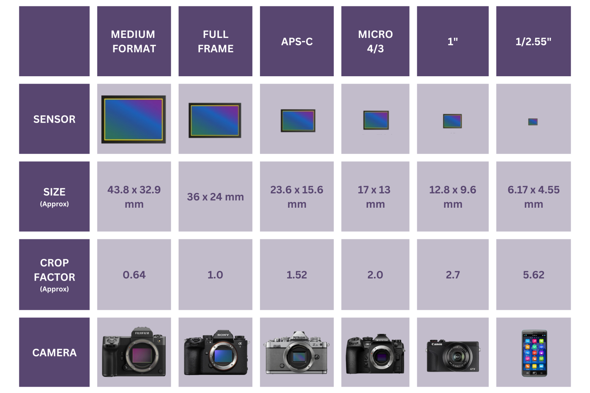

ประเภทเซ็นเซอร์
ทำความรู้จักกับขนาดเซ็นเซอร์รับภาพ หัวใจสำคัญที่กำหนดคุณภาพ ความคมชัด และมิติของภาพถ่ายของคุณ
ขนาดเซ็นเซอร์ต่างกันอย่างไร?
ขนาดของเซ็นเซอร์รับภาพเปรียบเสมือน "หน้าต่าง" ที่รับแสงของกล้อง ยิ่งเซ็นเซอร์มีขนาดใหญ่ ยิ่งรับแสงได้มากและส่งผลต่อภาพถ่ายในหลากหลายมิติ

การรับแสง (Low Light)
เซ็นเซอร์ขนาดใหญ่จะมีพื้นที่รับแสง (Pixel Pitch) ที่ใหญ่กว่า ทำให้สามารถถ่ายภาพในที่แสงน้อยได้ดีเยี่ยม และเกิดจุดสีรบกวน (Noise) ในภาพน้อยกว่าเซ็นเซอร์ขนาดเล็ก
ความชัดลึก (Depth of Field)
เมื่อใช้ทางยาวโฟกัสและรูรับแสงเท่ากัน เซ็นเซอร์ที่ใหญ่กว่า (เช่น Full Frame) จะสามารถสร้างเอฟเฟกต์หน้าชัดหลังเบลอ (ละลายฉากหลัง) ได้ง่ายและสวยงามกว่า
ระยะคูณ (Crop Factor)
เซ็นเซอร์ที่เล็กกว่าจะมีตัวคูณระยะ ทำให้เลนส์ซูมเข้าไปได้ใกล้ขึ้น (เช่น เลนส์ 50mm บน APS-C จะได้ระยะเทียบเท่า 75mm) ซึ่งได้เปรียบในการถ่ายภาพกีฬาหรือสัตว์ป่า
ขนาดและราคา (Size & Cost)
กล้องเซ็นเซอร์เล็กอย่าง Micro 4/3 หรือ APS-C มักจะมีราคาถูกกว่า ตัวกล้องและเลนส์มีน้ำหนักเบา พกพาสะดวก เหมาะกับการท่องเที่ยวมากกว่ากล้อง Full Frame
จำลองการครอปภาพตามขนาดเซ็นเซอร์
ทดลองเปลี่ยนขนาดเซ็นเซอร์จากกล่องด้านล่าง เพื่อดูพื้นที่การรับภาพที่จะถูกครอปออกไปเมื่อเทียบกับเซ็นเซอร์ขนาดต่างๆ
* พื้นที่สว่างคือส่วนที่เซ็นเซอร์ขนาดนั้นๆ สามารถรับภาพได้ (พื้นที่สีดำด้านนอกคือส่วนที่ถูกครอปออกไป)